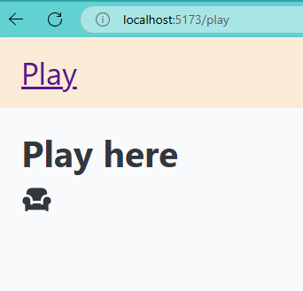
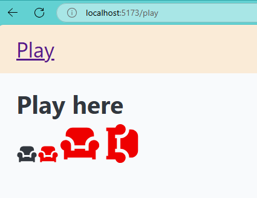
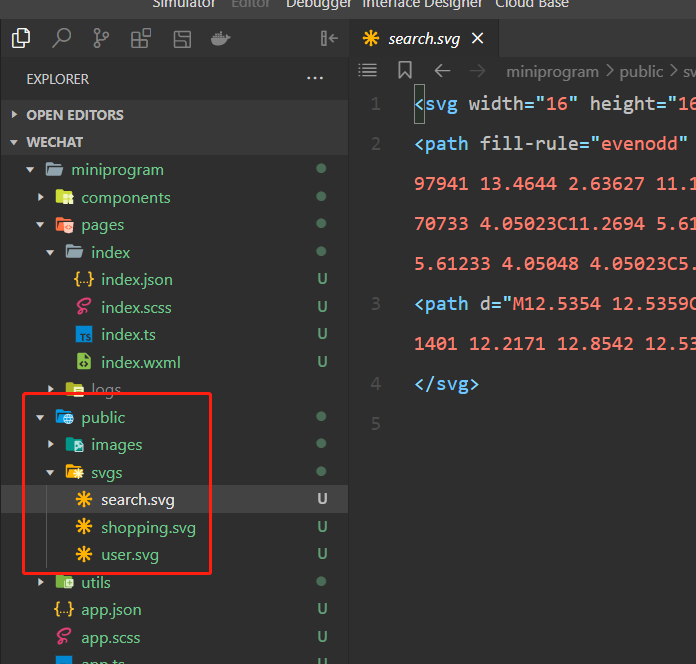
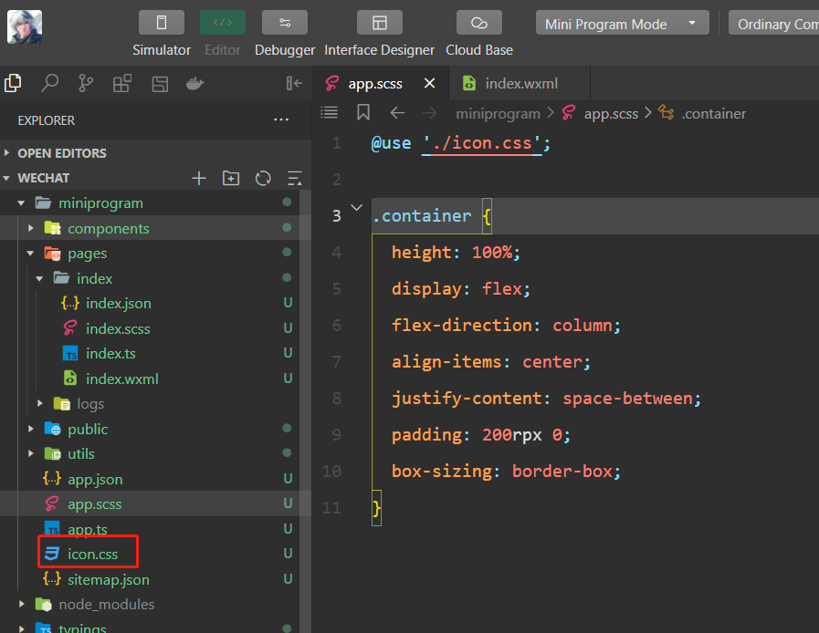

目录 (Table of Contents)
[TOCM]
[TOC]
本文目标：创建一个icons库，且具有一下特性：
tips:
node: v20+
最终代码在 main 分支，
前面基础示例在 iconify-base 分支
运行main分支代码：
pnpm i
pnpm dev:icons
pnpm dev:play
1. 使用方式非常多
前端开发中，使用图标的方式非常多，传统的有使用图片、Svg，从字体图标（Icon Fonts）等。基于框架又有很多不同封装，可以自己封装
比如图片可以用<img />标签，也可以css url()；
字体图标可以用 unicode <i class="iconfont">3</i> 或 font-class的方式 <i class="iconfont icon-xxx"></i>;
svg可以直接使用<svg />标签，也可以图片标签加载<img src="menu.svg" />, css url也可以加载svg.
2. 多种图标来源
3. 多项目可复用性
很多项目都有pc和mobile端，甚至小程序，它们往往都是同一套ui风格，图标也几乎是从同一份设计稿下载的，
但日常开发中同样的图标文件往往只能通过cv的方式粘到各个端的项目中，造成维护成本翻倍，占磁盘空间。
尽管上述有那么多使用图标的方式，但实际开发大多是使用svg和font-class的方式，
因为他们都可以直接通过css来改变尺寸和颜色，这种便利性是其它方案难以做到的，但这两种方式仍有一些局限性。
在支持用css改图标样式的前提下：
svg: 不支持小程序。
font-class: 高分辨率下会模糊，不能用js控制内部细节，比如图标的路径动画？
web: 用svg标签，因为不会失真且能用js控制内部细节，方便做动画；
小程序：为了能用css改图标样式，只能用font-class。
传统的做法是web端项目用svg的封装库，比如svgr，小程序端用iconfont的font-class方案。
今天介绍一个能统一web和小程序技术栈的图标库 —— Iconify
最后还会演示多端多项目如何引用同一个图标库。
引用官网原文： Iconify是一套面向开发人员和设计师的工具，旨在以一致的方式轻松使用不同的图标集。
代码都以react项目为例。
根据不同使用场景选择对应的方式：
web开发建议使用web component的方式，这样可以不限技术栈。
而web component官方也提供了一个react的封装包@iconify-icon/react，
和@iconify/react不同，前者只是以react的方式封装了一下web component组件，后者完全是react的实现方式。
安装
npm add @iconify-icon/react
找到官方图标
在官方图标库选择一个图标.

引入并使用
import { Icon } from "@iconify-icon/react";
function Page() {
return (
<div className="page">
<Icon icon="ri:armchair-fill" />
<div>
);
}
页面上应该有了一个沙发的图标：

用到那个图标，就是去加载对应的json文件。
改变属性
可以方便的用css或自带的一些属性改变图标样式
<Icon icon="ri:armchair-fill" />
<Icon icon="ri:armchair-fill" style={{ color: '#e00' }} />
<Icon icon="ri:armchair-fill" style={{ color: '#e00', fontSize: '2em' }} />
<Icon icon="ri:armchair-fill" style={{ color: '#e00', fontSize: '2em' }} rotate={45} />

官方图标可很好的满足没有ui设计的公司或项目，怕请求失败的话也可把官方库私有化部署。
对于有设计稿的项目，如果要完美还原，那只能从设计稿下载图标文件。
添加图标到项目的静态资源目录

生成icon data
npm add @iconify/tools
根目录添加个iconify.js:
import { join, dirname, normalize } from "node:path";
import { fileURLToPath } from "node:url";
import { promises as fs } from "fs";
import {
importDirectory,
cleanupSVG,
runSVGO,
parseColors,
isEmptyColor,
} from "@iconify/tools";
export function getDirname() {
const filename = fileURLToPath(import.meta.url);
return dirname(filename);
}
const DefaultOptions = {
sourcePath: "/public/svgs",
destPath: "/public/zs.json",
};
genIconJson();
function genIconJson(options = {}) {
const finalOptions = { ...DefaultOptions, ...options };
refreshIconJson({
root: getDirname(),
...finalOptions,
}).then(() => {
console.log(`${finalOptions.destPath} refreshed`);
});
}
async function refreshIconJson({ root, sourcePath, destPath }) {
const iconSet = await importDirectory(join(root, sourcePath), {
prefix: "zs",
ignoreImportErrors: false,
});
iconSet.forEach((name, type) => {
if (type !== "icon") {
return;
}
const svg = iconSet.toSVG(name);
if (!svg) {
iconSet.remove(name);
return;
}
try {
cleanupSVG(svg);
parseColors(svg, {
defaultColor: "currentColor",
callback: (attr, colorStr, color) => {
if (!color) {
return colorStr;
}
if (isEmptyColor(color)) {
return color;
}
return "currentColor";
},
});
runSVGO(svg);
} catch (err) {
console.error(`Error parsing ${name}:`, err);
iconSet.remove(name);
return;
}
// Update icon
iconSet.fromSVG(name, svg);
});
// Export as IconifyJSON
const exported = JSON.stringify(iconSet.export(), null, "\t") + "\n";
// Save to file
await fs.writeFile(join(root, destPath), exported, "utf8");
}
node iconify
此时会生成一个zs.json, iconify会读取这个文件，里面列出了可以使用的图标。

在入口文件处发请求：添加图标到iconify组件
axios.get('/public/zs.json').then(({ data }) => {
addCollection(data);
});
然后就能像用官方组件一样，用自己添加的组件：
<Icon icon="zs:search" style={{ color: "blue" }} />
<Icon icon="zs:shopping" style={{ color: "red" }} />
<Icon icon="zs:user" style={{ color: "yellow", fontSize: "24px" }} />

虽然可以使用本地图标，但每次修改svg目录，还是得跑一下iconify.js, 可用node监听svg目录变化自动run iconify.js.
建议参考项目使用的cli,这里以vite为例写个插件：
vite-plugin-iconify.js
import { join, dirname, normalize } from "node:path";
import { fileURLToPath } from "node:url";
import { promises as fs } from "fs";
import {
importDirectory,
cleanupSVG,
runSVGO,
parseColors,
isEmptyColor,
} from "@iconify/tools";
export function getDirname() {
const filename = fileURLToPath(import.meta.url);
return dirname(filename);
}
const DefaultOptions = {
sourcePath: "/public/svgs",
destPath: "/public/zs.json",
};
export default (options = {}) => {
const finalOptions = { ...DefaultOptions, ...options };
let root = getDirname();
return {
name: "vite-plugin-iconify",
apply: "serve",
configResolved(config) {
console.log("configResolved>>>", config.root);
root = config.root;
},
configureServer(server) {
return () => {
// server.watcher.add(join(root, finalOptions.sourcePath));
server.watcher.on("add", (path) => {
// console.log(`File add: ${path} `);
refreshIconJson({
root,
changedFilePath: path,
...finalOptions,
}).then(() => {
console.log(`${finalOptions.destPath} refreshed`);
});
});
server.watcher.on("unlink", (path) => {
// console.log(`File unlink: ${path} `);
refreshIconJson({
root,
changedFilePath: path,
...finalOptions,
}).then(() => {
console.log(`${finalOptions.destPath} refreshed`);
});
});
server.watcher.on("change", (path) => {
// console.log(`File changed 2: ${path} `);
refreshIconJson({
root,
changedFilePath: path,
...finalOptions,
}).then(() => {
console.log(`${finalOptions.destPath} refreshed`);
});
});
};
},
};
};
async function refreshIconJson({
root,
changedFilePath,
sourcePath,
destPath,
}) {
if (!normalize(changedFilePath).includes(normalize(sourcePath))) return;
const iconSet = await importDirectory(join(root, sourcePath), {
prefix: "zs",
ignoreImportErrors: false,
});
iconSet.forEach((name, type) => {
if (type !== "icon") {
return;
}
const svg = iconSet.toSVG(name);
if (!svg) {
iconSet.remove(name);
return;
}
try {
cleanupSVG(svg);
parseColors(svg, {
defaultColor: "currentColor",
callback: (attr, colorStr, color) => {
if (!color) {
return colorStr;
}
if (isEmptyColor(color)) {
return color;
}
return "currentColor";
},
});
runSVGO(svg);
} catch (err) {
console.error(`Error parsing ${name}:`, err);
iconSet.remove(name);
return;
}
// Update icon
iconSet.fromSVG(name, svg);
});
// Export as IconifyJSON
const exported = JSON.stringify(iconSet.export(), null, "\t") + "\n";
// Save to file
await fs.writeFile(join(root, destPath), exported, "utf8");
}
vite.config.js
import { defineConfig } from "vite";
import react from "@vitejs/plugin-react";
import iconify from "./vite-plugin-iconify";
export default defineConfig({
envDir: "envs",
cacheDir: "../../node_modules/.vite",
plugins: [react(), iconify()],
});
配置好后，只需要在svg目录修改图标就能直接用了，比svgr还方便一点，但这点可以忽略不记，
关键是svgr不能用在小程序，这就导致小程序得换其它方案，但iconify支持font-class的用法，能在小程序使用。
这里以原生微信小程序为例。
首先添加资源目录，放几个svg进去

因为是font-class的用法，所以得先给这些图标生成css，和上面类似这里新建一个脚本：
iconify.js
import { writeFileSync } from "node:fs";
import { getIconCSS } from "@iconify/utils";
import {
importDirectory,
cleanupSVG,
runSVGO,
parseColors,
isEmptyColor,
} from "@iconify/tools";
const svgPath = "miniprogram/public/svgs";
const destPath = "miniprogram/icon.css";
const ignoreNames = ["logo"];
(async () => {
const iconSet = await importDirectory(svgPath, {
prefix: "zs",
ignoreImportErrors: false,
});
let cssStr = "";
iconSet.forEach((name, type) => {
if (type !== "icon" || ignoreNames.includes(name)) return;
const svg = iconSet.toSVG(name);
if (!svg) {
// Invalid icon
iconSet.remove(name);
return;
}
try {
cleanupSVG(svg);
parseColors(svg, {
defaultColor: "currentColor",
callback: (attr, colorStr, color) => {
if (!color) {
return colorStr;
}
if (isEmptyColor(color)) {
return color;
}
return "currentColor";
},
});
// Optimise
runSVGO(svg);
} catch (err) {
// Invalid icon
console.error(`ICON Error parsing ${name}:`, err);
iconSet.remove(name);
return;
}
const iconData = svg.getIcon();
cssStr +=
getIconCSS(iconData, {
iconSelector: ".zs-icon__" + name,
}) + "\n";
});
writeFileSync(destPath, cssStr, "utf8");
// todo: watch svgPath by chokidar
})();
node iconify.js
然后就会生成icon.css, 导入到全局的app.scss中去

然后在wxml中使用

这样web和小程序端都能统一用iconify管理和开发图标，
小程序也能像web端一样监听svg目录变化，自动执行脚本，如果用了taro这种框架，可以写个webpack插件，原生也可以用nodejs监听。
小程序端的监听等会在做，现在还需要解决svg目录复用问题。
到目前为止，iconify已经可以同时用于web和小程序，但可以看到，用一个svg目录，却要复制两份分别放到web端和小程序端的静态目录里，这还只是两个项目，如果这仓库有多个子项目，svg目录体积将成倍增长，而且跨项目也无法复用。
下面开始改造目录结构，让多项目可从统一图标库复用图标，当前基础示例的代码暂存在 iconify-base 分支
利用monorepo的方式，单独创建一个图标库，暴露出web和小程序端使用到的iconData.json和icon.css, 并写一个node监听脚本，达到自动化。
在库中先node build生成icon-data.json和icon.css，然后导出：

下面演示第2种方式。
在web端引用：

如果远程部署了仍然可以通过http请求。
在小程序引用：
如果用了taro之类的，引用方式类似web端，
但原生小程序小程序 app.scss 没法直接从monorepo中引入css,
这里需要一个额外的脚本:
在wechat项目根目录新建copy.js:
import { copyFile } from "node:fs/promises";
try {
await copyFile("../icons/icon.css", "./miniprogram/icon.css");
console.log("copy icon.css success");
} catch (error) {
console.error("The icon.css could not be copied", error);
}
node copy
这样就将icon.css复制到小程序里了，然后引入并使用：

现在web端和小程序端，甚至更多的端比如管理系统，或其他子项目，
都可以从同一个icons库复用图标
流程上还有些可优化的点：
第二条做法同第一条。
第三条只需把icon-data.json中的icons字段拆开就行。
添加一个watch.js和script:

// 监听svgs变化，自动刷新icon.css和icon-data.json
npm run dev
所以如果项目需要频繁变动svg文件，
只需多跑一个 npm run dev 即可。
运行main分支代码：
pnpm i
pnpm dev:icons
pnpm dev:play
实际项目可视情况用 concurrently 合并 pnpm dev:icons 和 pnpm dev:play
"concurrently \"pnpm dev:icons\" \"pnpm dev:play\"",